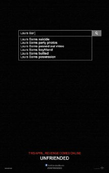
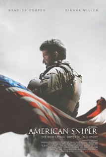

Topplista
| Filmnamn | Bild |
| Kingsman A spy organization recruits an unrefined, but promising street kid into the agency's ultra-competitive training program, just as a global threat emerges from a twisted tech genius |
1 |
| Guardians of the Galaxy A group of intergalactic criminals are forced to work together to stop a fanatical warrior from taking control of the universe. |
 2 |
| Interstellar A team of explorers travel through a wormhole in an attempt to ensure humanity's survival. |
 3 |
| Cybernatural A group of online chat room friends find themselves haunted by a mysterious, supernatural force using the account of their dead friend. |
 4 |
| Unbroken After a near-fatal plane crash in WWII, Olympian Louis Zamperini spends a harrowing 47 days in a raft with two fellow crewmen before he's caught by the Japanese navy and sent to a prisoner-of-war camp. |
 5 |
| American Sniper Navy SEAL sniper Chris Kyle's pinpoint accuracy saves countless lives on the battlefield and turns him into a legend. Back home to his wife and kids after four tours of duty, however, Chris finds that it is the war he can't leave behind. |
 6 |
| It Follows A young woman is followed by an unknown supernatural force after getting involved in a sexual encounter. |
7 |
| Captain America: Return of the First Avenger As Steve Rogers struggles to embrace his role in the modern world, he teams up with another super soldier, the black widow, to battle a new threat from old history: an assassin known as the Winter Soldier. |
 8 |
| Kahlil Gibran's The Prophet Inspired by the classic book by Kahlil Gibran, The Prophet is an animated feature film, with "chapters" from animation directors from around the world. |
9 |
| X-Men: Days of Future Past The X-Men send Wolverine to the past in a desperate effort to change history and prevent an event that results in doom for both humans and mutants. |
10 |